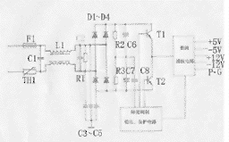
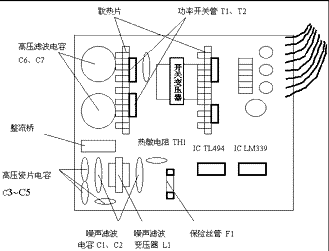

|
|
| 当前位置：电脑报电子版 > 1999 年 > 28 期 > 硬件周刊 > 电源打摩记 |
| 《 电源打摩记 》 |
| 近日,天气骤热，为友攒的机器中，陆续有几台“非正常死亡”，究其原因，都是电源出现了问题。解剖损坏的电源，才发现电源损坏纯属先天不足。为了降低成本，一些电源生产厂家选配元件是能省则省，电路中根本没有安装抗干扰元件的而直接用短接线跳过，关键部位的选件也极不合理。几台电源损坏的原因大都是功率开关管被击穿后导致周围部件大面积烧毁，幸好主机其它部件没有被殃及。 纵观市场上的电源，其标称功率各异，指标大小可能因厂家不同而不同，实际输出功率则没有多大区别，这从内部主电路三极管的用料和输出变压器大小就可看出。另外，市场上某些标称230W的电源，其功率甚至不如某些标称200W的电源。所谓的“原装机”电源，其长处并不是功率较大，而是用料考究，电源高频滤波电路中的电容一般多用CBB电容，比普通电源中用的涤纶电容要贵得多。同样是电解电容，原装机的要大些。由于用料不一样原装机的可靠性要高，输出电压的纹波要小，购买电源“一分价钱一分货”，这话绝对没错。 但对我们DIYer来说，购买原装电源比较困难。左衡量，右考虑，最终还是牵回台普通的兼容电源。没办法，回家后把电源大卸八块，发扬我辈“攒机族”的发烧精神，堤内损失堤外补——“摩电源”！ 如图1所示，这是一个普通电源电路示意图，其它型号的电源的主电路也都大同小异。为节省成本，厂家一般都省略掉了虚线框内的元件，部分关键部件也存在“偷工减料”的现象。参考国外相同功率的电源电路，按以下步骤进行操作： 一、拆除短接线，补焊上被省却的噪声滤波器L1 滤波器用彩电电源中常用的型号为TLP6559E或LB10－B即可，其大小和管脚位置正合适，若嫌功率不足，可取下磁芯，退绕下原线圈，用同样长ф0.8mm漆包线绕满原骨架即可。注意相位要保持一致(即绕向保持一致)。 二、补焊被省却的噪声滤波电容 图1中C1、C2用0.033μf/1000V CBB电容，C3、C4、C5用2200 p/2kV的高压瓷片电容。注意一定要采用正品优质电容，特别是C3、C4、C5，耐压系数一定要保证，人命关天哟！ 三、更换保险丝  由于开机时要对C4、C5充电，虽经热敏电阻TH1限流，冲击电流仍很大，因此厂家一般选择熔断电流为5A左右的保险管，但电路实际电流不超过2A，且由于采用的保险丝管又不是快速熔断型的，当电路出现短路故障时反应速度往往又太慢，常造成功率开关管烧毁的后果。可借鉴有些原装机电源（如COMPAQ）采用彩电上用的2A延迟快速熔断保险丝。有的电源，保险丝是焊在电路板上的，把新保险丝原样焊上即可，焊时动作要快，否则会把保险丝熔断的。 四、改善整流电路 部分电源采用整流桥，有的采用四只整流二极管1N4007（1A/1000V），但额定电流普遍太小。用四只1N5404(3A/400V)代换，可靠性往往比全桥要高。 五、功率开关管 原电路中所用功率开关管型号为MJE13007（400V/ 8A /75W），TO－220封装；还有的采用MJE13005－2。双管推挽电路，其输出功率在理想情况下为双管功率之和，显然，该电源功率远远达不到所标称的230W的标准，所以要坚决换掉。把散热片和T1，T2一齐焊下，T1，T2用两只BU508A（700V /8A /125W）代换，BU508A是TO－3型管。电路板上一般都留有TO－220和TO－3两种封装管的位置，代换不成问题。BU508A分全塑封和半塑封两种封装形式，采用后者时，要采取绝缘措施，必须注意要连同螺丝一同绝缘（螺丝必须加黄蜡套管和环氧垫圈）。代换时，先把晶体管在散热片上固定好，晶体管与散热片间要涂上导热硅胶，散热片和晶体管整体安装在电路板上后，先焊接固定好散热片，然后再焊晶体管管脚，以免使电路板受力留下隐患。 六、改善电容 原电路中C6，C7一般用220цF/200V电解电容，耐压和容量都嫌不足，可考虑用470цF/250V高压电解电容代换；另外，各路输出电压的滤波电容一般取值过小，例＋5V电压的滤波电容为470цF/25V，和正规电源相比，取值太小，可换成2200цF/25V电解电容，±12V和－5V端几个滤波电容也是照此处理。 原电路其它部位的电容，例如在电源保护电路、脉宽调制电路等，为节省成本，有的电源中存在用瓷片电容替代电解电容的现象。这种电源，由于滤波不良，工作一段时间后易出现问题，所以要坚决换掉。代换时，注意电路板上的元件符号，电路板上标有电解电容符号处的瓷片电容一定要用电解电容代换。一般用耐压50V、容量为几个微法的电解电容代换即可，其它电解电容搞不清用途则不要随意更换！ 经过以上改装，一台性能合格、功率十足的电源便改装完毕，别急通电，仔细清理电路板上残留的小锡珠，检查代换电路安装是否正确无误，检查代换的电解电容的极性是否正确；测电源输入端正反向电阻正常（用R×1K档，指针由几十K渐变为几百K）。在＋5V输出端接入2.2Ω/10W电阻作假负载，通电检测各输出电压准确无误，摩机结束。电源安装上后，机器恢复正常；同时惊喜地发现，原先如何也超不上的赛扬300A，经电源“打摩”后，很轻松地超上了450MHz，且运行十分稳定，原来超频也与电源有关！这也难怪，一台功率不足，抗干扰能力极差，输出电压交流纹波较大的电源，又怎么能指望靠它来超频呢！？ 你在改装过程中，如果遇到什么困难，请来信告诉我，我的E－Mail是LIHONGL@JN－PUBLIC.SD.CNINFO.NET。 (山东 王庆东) |
| 下载本期推荐软件 | 页 首 |
| 《电脑报》版权所有，电脑报网站编辑部设计制作发布 |